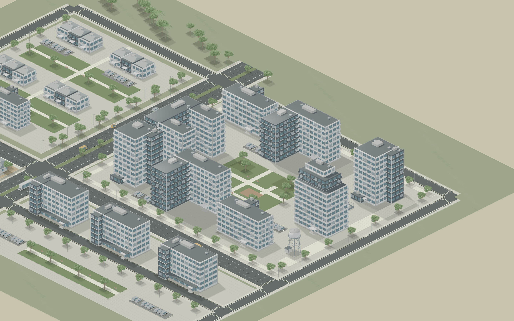
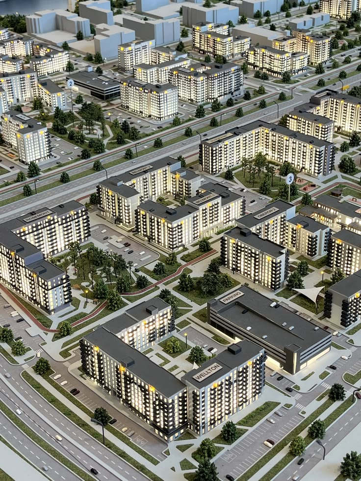

Open the interactive Visual Lab · Compare density, facade rhythm, public realm, scale and restrained materials.
The benchmark is an actual Phaser export. Its geometry is independently composable in the Lab.

